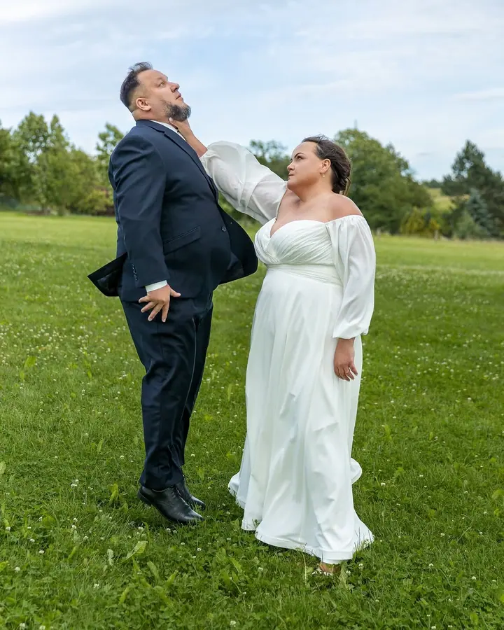
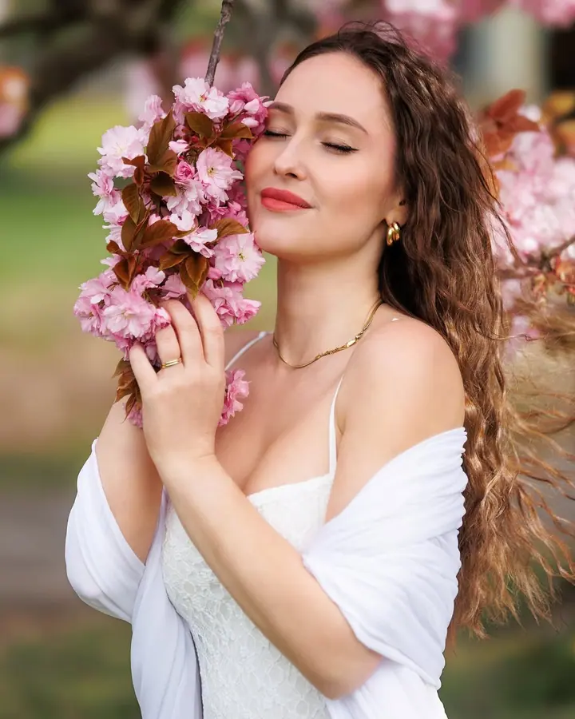
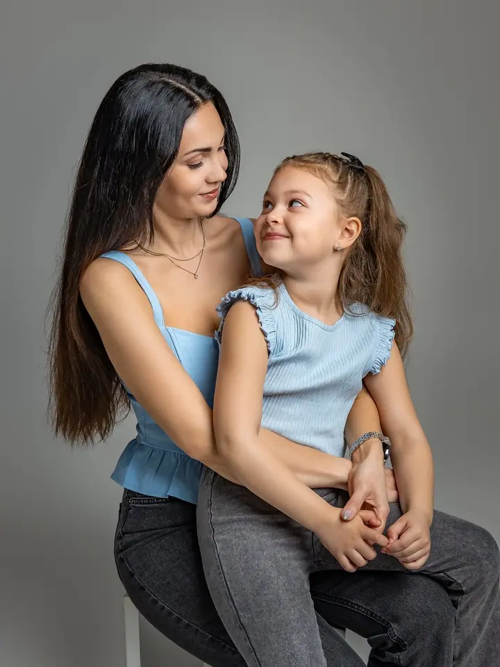
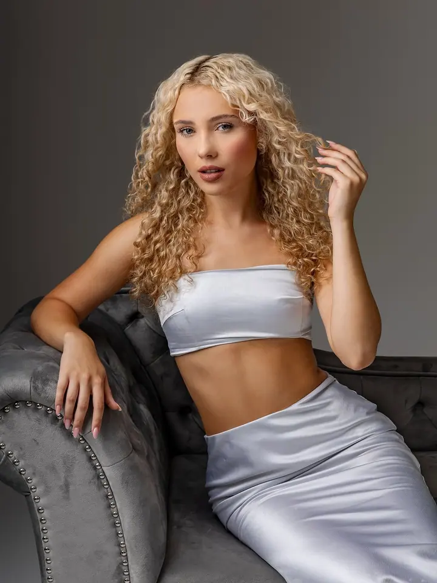
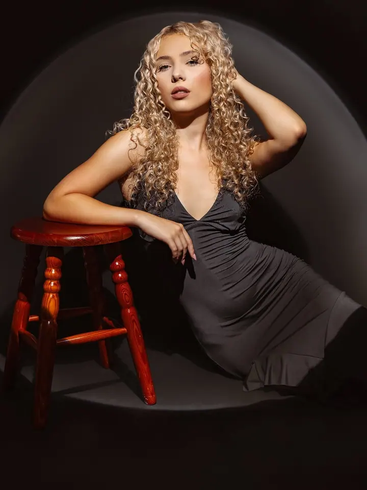
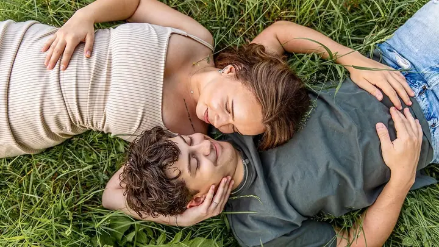

Svatební focení
Fotím jen obřad, půl dne nebo celý svatební den. Přizpůsobím se vašemu stylu, ať chcete klasické svatební pózy, nebo nestrojené fotky.





Jmenuji se Eva Bartovičová a žiju v Havířově, kde mám také svůj ateliér. Fotím svatby, rodiny a portréty v ateliéru i venku. Už od roku 2016 se věnuji také produktové fotografii pro firmy a e-shopy.
Více o mně
„Občas také workoholik a snílek, který do focení dává tělo i duši.“
— Eva Bartovičová
Fotím jen obřad, půl dne nebo celý svatební den. Přizpůsobím se vašemu stylu, ať chcete klasické svatební pózy, nebo nestrojené fotky.
Rodinné focení v ateliéru v Havířově nebo venku. Focení trvá 1,5 až 2 hodiny a hotové fotky si vyberete v online galerii.
Portrétní a módní fotografie v ateliéru i v exteriéru.
Fotím produkty pro e-shopy, weby i sociální sítě. Každý produkt zasadím do jeho přirozeného prostředí, aby vyprávěl příběh a dobře se prodával.
Jmenuji se Eva Bartovičová a fotografií se živím od roku 2017. Mám ráda kočky, barevné hrnky a dobré jídlo. Občas jsem workoholik a snílek, který do focení dává tělo i duši.
Na svatbách mě nejvíc baví jejich rozmanitost a to, že je každá jiná. Ráda vyfotím slzičky dojetí i šťastné chvíle. Při společném focení se přizpůsobím vám, ať chcete klasické svatební pózy, nebo spíš nestrojené fotky. Zvládneme obojí.
Produktům se věním od roku 2016 a právě v nich jsem se našla. Fotila jsem pro e-shop Feratt Fashion, pro který dělám i grafiku a vizuály, a také pro značky PRIM hodinky a Gr Product. V ateliéru v Havířově fotím rodiny, děti a portréty a každý rok tu chystám vánoční minifocení.
Pošlete mi poptávku přes kontaktní formulář a já se vám do pár dnů ozvu. Pokud chcete, můžeme se potkat osobně v Havířově.
U svateb je termín závazně váš po připsání rezervačního poplatku 2 000 Kč na účet. Pak ho držím jen pro vás.
Fotím v ateliéru v Havířově, venku nebo přímo na vaší svatbě. Když nevíte kde fotit, ráda vám s výběrem místa pomůžu.
Upravené fotky najdete v online galerii. Rodinné focení předávám zhruba do 2 až 4 týdnů, svatbu do 6 až 8 týdnů i s flashdiskem v plném tiskovém rozlišení.
Focení trvá 1,5 až 2 hodiny a stojí 1 500 Kč. V ceně je 5 upravených fotek podle vašeho výběru, každou další můžete dokoupit za 150 Kč.
Obřad (2 hodiny) za 5 000 Kč, půldenní balíček (6 hodin) za 9 500 Kč a celodenní balíček (10 hodin) za 13 500 Kč. Každá hodina navíc stojí 1 000 Kč.
Ráda za vámi dojedu kamkoliv, jezdím vlastním autem. Doprava v rámci Havířova, Ostravy a blízkého okolí je v ceně balíčku, delší cesty domluvíme individuálně.
Pošlu vám všechny fotky, které byste podle mě rádi měli, a většinou jich je víc, než balíček slibuje. Neupravené fotky ale nepředávám v žádné podobě.
Ano, nabízím asistovaný fotokoutek na vašem pozadí nebo na zeleném pozadí, kam v reálném čase doplníme jiné pozadí. K dispozici je také MobilPrint s neomezeným tiskem fotek.
bartovieva@gmail.com
Havířov · Ostrava